TikTok English Teaching Character
Character IP asset library for fast content production
A photorealistic English teacher character asset library with white background and Green Screen images. Includes 20 production-ready assets across 1:1 half-body and 9:16 vertical formats.
20 images
4 asset sets
2 backgrounds
Image + Video prompts
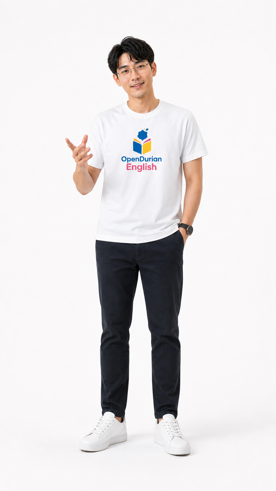
GitHub Lite
No ZIP downloads in this upload version
This version removes large ZIP files so GitHub browser upload is less likely to fail. The website still includes all character images under assets/images/.
Asset Gallery
All Character Images
Choose the set you need: 1:1 half-body images for thumbnails/posts, or 9:16 vertical images for TikTok, Reels, and Shorts.
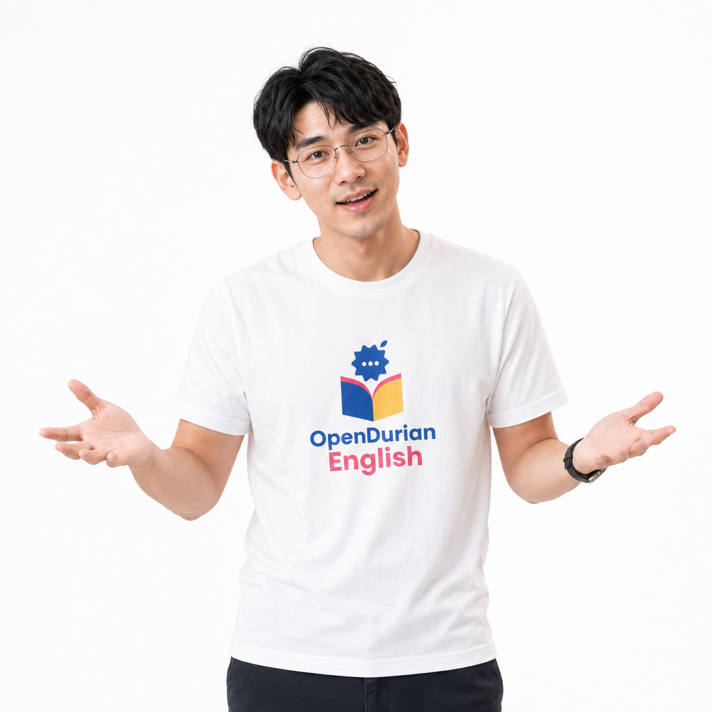
Open Palms
Point Up
Thinking
Flashcard
Presenter
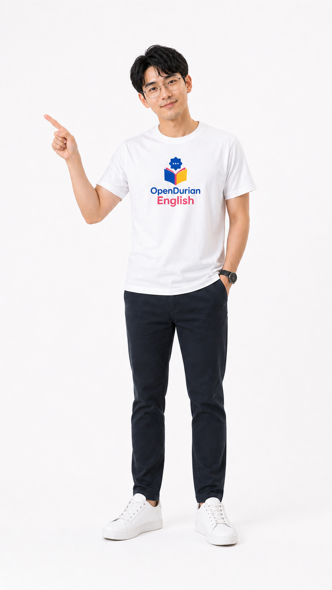
Point Left
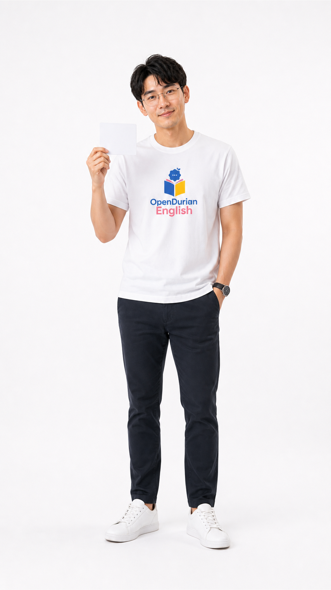
Card
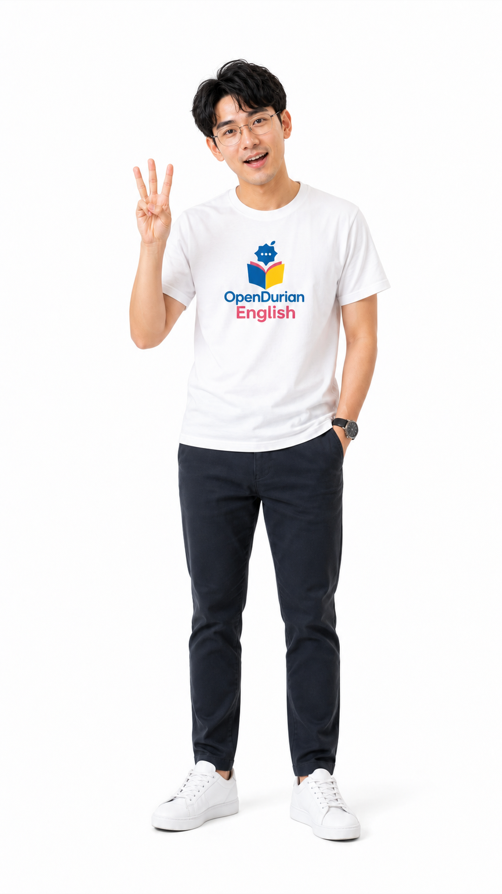
Three Tips
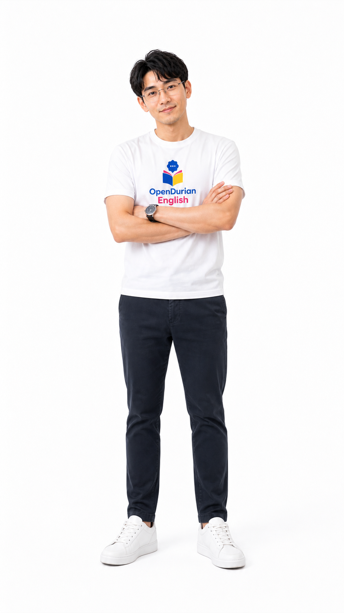
Arms Crossed
Wave
Open Palms
Point Up
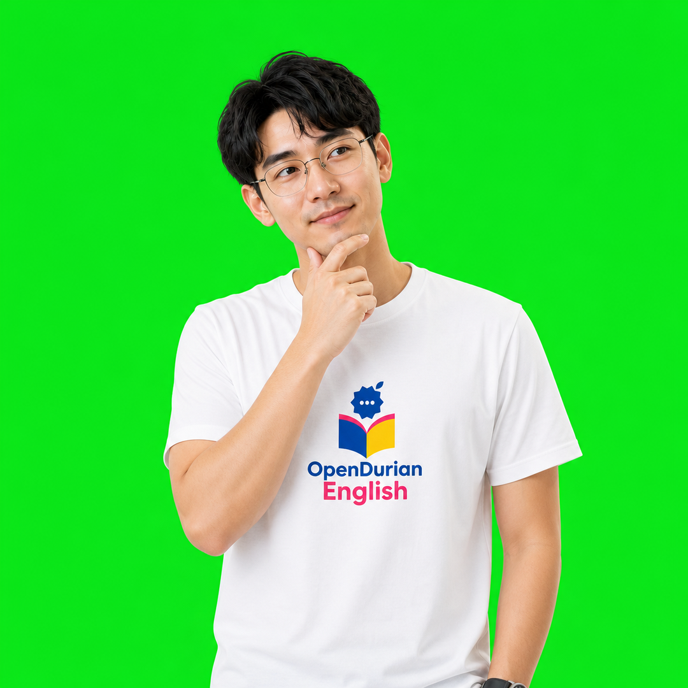
Thinking
Flashcard
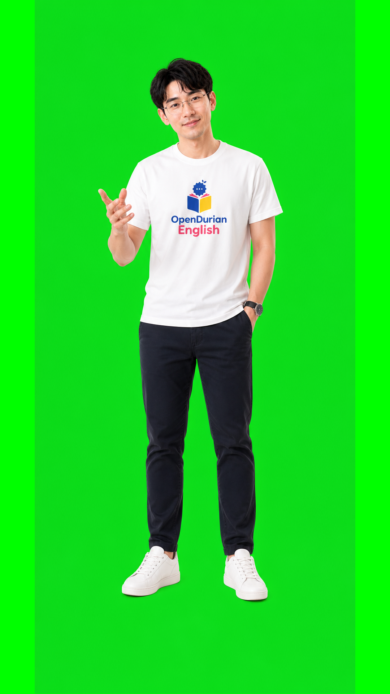
Presenter
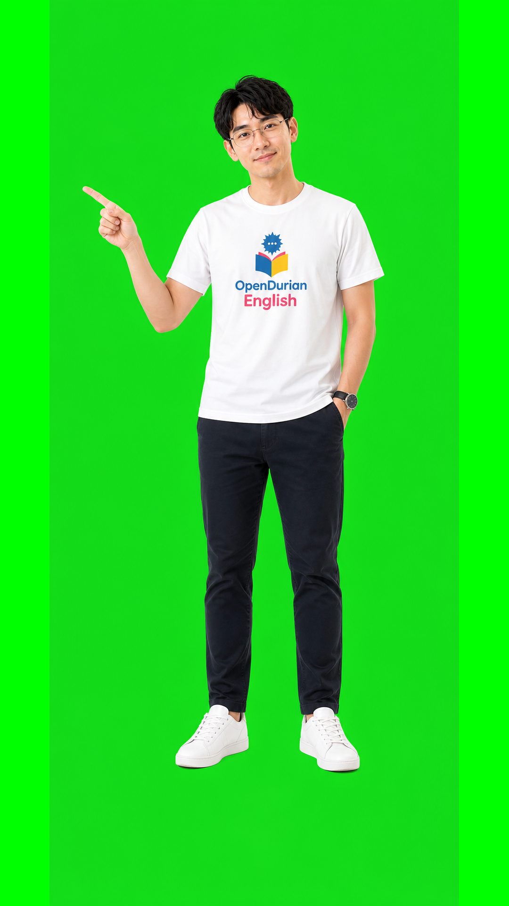
Point Left
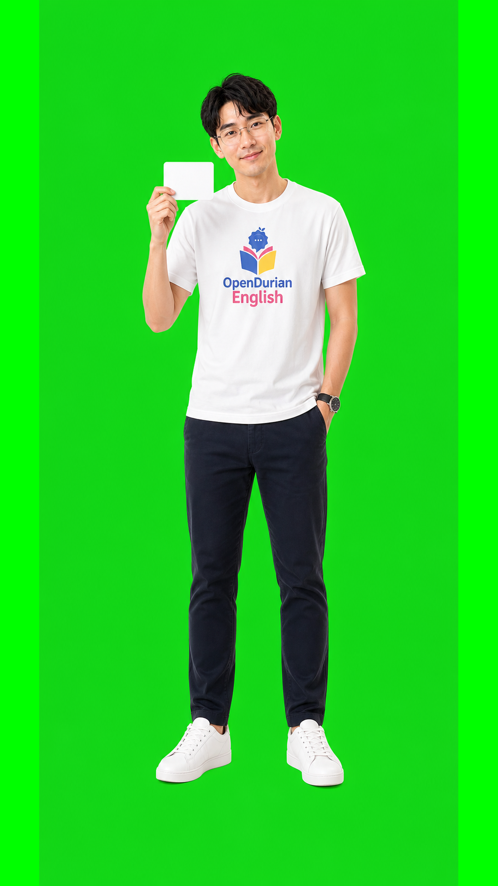
Card
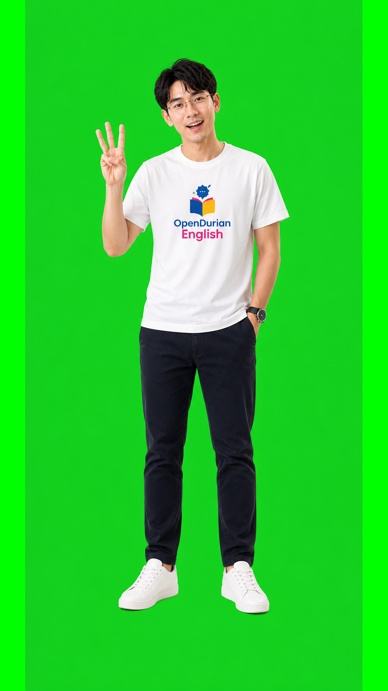
Three Tips
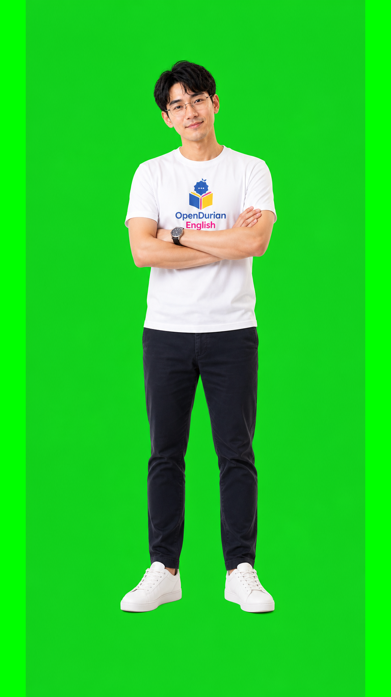
Arms Crossed
Prompt Library
Reusable Prompts
Select a prompt by use case, then change only the topic, sentence, pose, or background you need.
Still Image: White Background
Create a highly realistic studio photograph of the OpenDurian English teacher character. Young Asian male, wavy black hair with soft middle part, round thin metal eyeglasses, friendly natural expression, realistic skin texture. He wears a clean white cotton T-shirt with the OpenDurian English 2026 logo naturally printed into the center chest fabric, following folds and lighting. Background: pure white seamless studio. Composition: [1:1 half-body or 9:16 full-body]. Pose: [describe one teaching pose]. Real camera photography, not cartoon, not 3D, not illustration. Avoid pasted logo, old green/yellow logo, watermark, random text, distorted hands.
Still Image: Green Screen
Create a highly realistic studio photograph of the OpenDurian English teacher character on a perfectly flat solid #00ff00 green screen background. The subject is a young Asian male English teacher with wavy black hair, round thin metal eyeglasses, realistic skin texture, white cotton T-shirt with the OpenDurian English 2026 logo printed naturally into the center chest fabric, dark pants, white sneakers. Composition: [1:1 half-body or 9:16 full-body]. Pose: [describe one teaching pose]. Keep clean keying-friendly edges, no shadows or gradients on the green background. Avoid cartoon, 3D render, pasted logo, watermark, random text.
Video Gen: Talking Head
Generate a 9:16 realistic talking-head video of the OpenDurian English teacher character. He faces the camera, speaks warmly, and gestures naturally with one hand. Keep the same identity: young Asian male, wavy black hair, round thin metal glasses, white T-shirt with OpenDurian English 2026 logo printed on fabric. Background: [white studio / green screen / learning slide background]. Movement: subtle head movement, natural blinking, small hand gesture. Duration: [5-8 seconds]. Avoid cartoon style, face morphing, logo distortion, extra fingers, unstable text.
Video Gen: Lesson Overlay
Create a 9:16 short-form lesson video. Place the OpenDurian English teacher character on the right side, pointing to lesson text area on the left. The teacher is realistic, wearing a white T-shirt with the OpenDurian English 2026 logo printed naturally on the chest. Background: clean educational layout with space for captions. Action: teacher points, smiles, then returns to relaxed pose. Duration: [6 seconds]. Avoid distorted hands, logo warping, random text, cartoon style, overbusy background.
Production Rules
Character IP Rules
Must Keep
- Keep the same Asian male teacher identity, wavy black hair, and thin round metal glasses.
- Use a white T-shirt with the OpenDurian English 2026 logo centered on the chest.
- The logo must look printed into the cotton fabric, not pasted as a sticker.
- Keep a photorealistic studio look with bright, friendly lighting.
Must Avoid
- Do not use cartoon, anime, 3D render, mascot, or doll-like skin.
- Do not use the old green/yellow logo or incorrect logo colors/text.
- Avoid distorted hands, extra fingers, or a face that changes identity.
- Avoid cluttered scenes, watermarks, and random text in images.